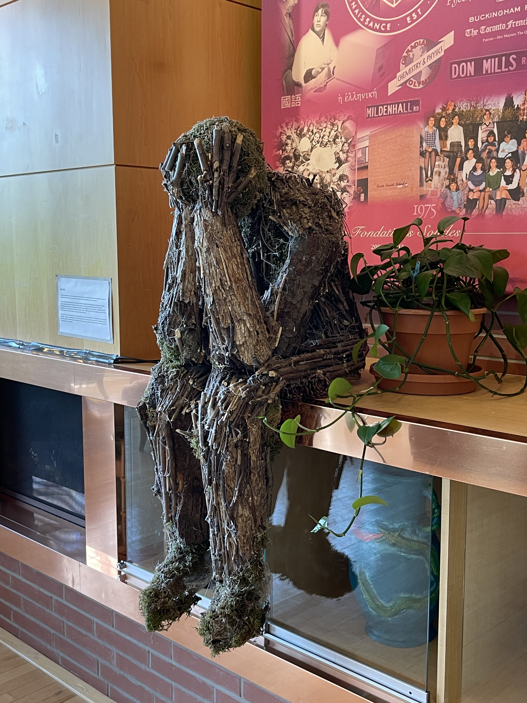
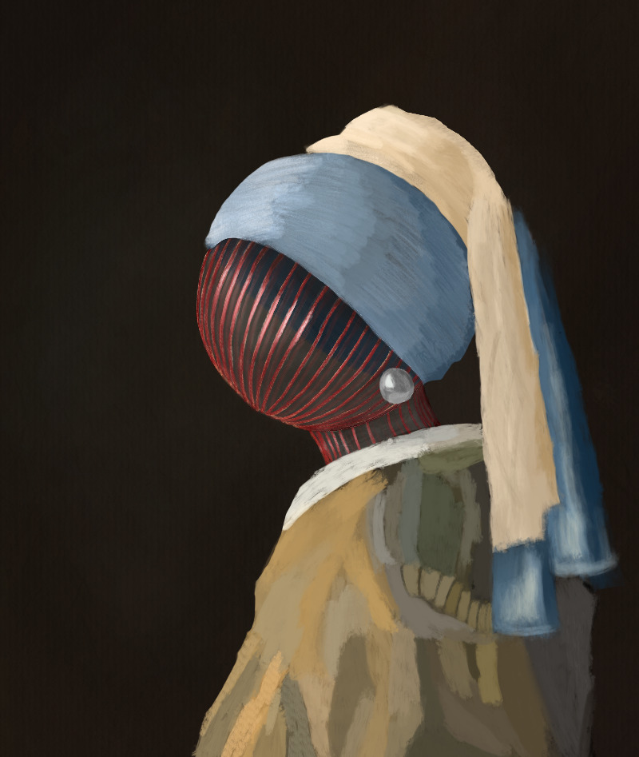
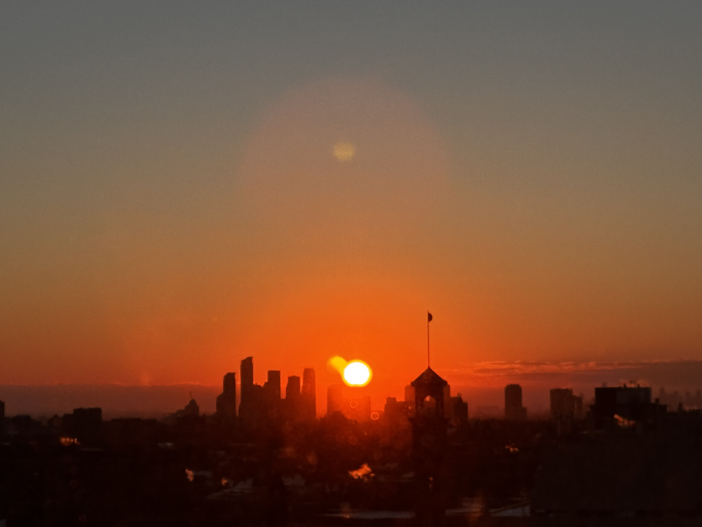
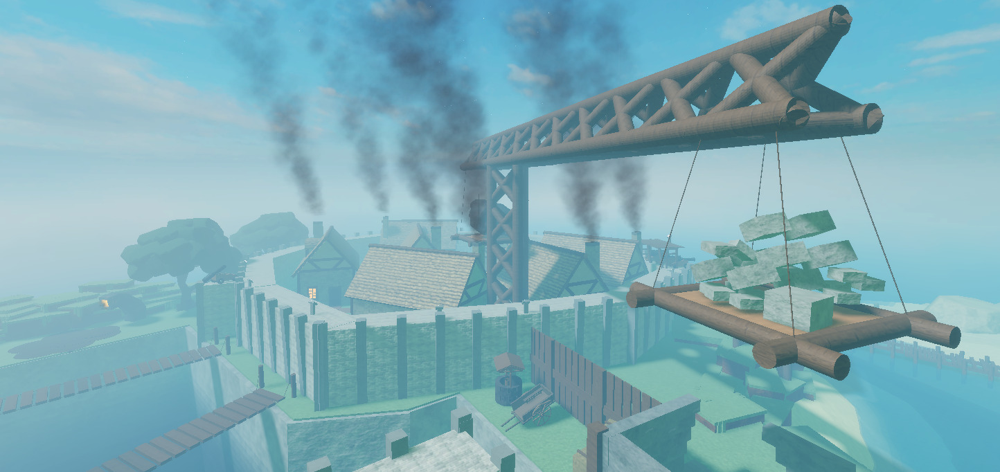
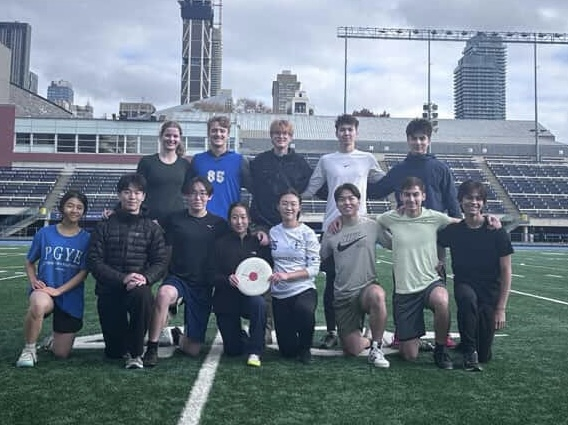
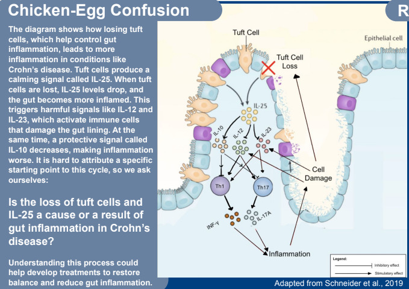

ian.magnuson@mail.utoronto.ca (linkedin, cv)
I am an undergraduate student at the University of Toronto, pursuing an HBSc as a Health and Disease specialist with a minor in Immunology (2024–2028). I've been fortunate enough to work with Dr. Kevin Wang and Dr. Ian Chan on research projects spanning neuro-oncology and infectious disease.
At Princess Margaret Hospital's Pencer Brain Tumour Clinic, I study the genomic landscape of pediatric-type gliomas across adolescent, young adult, and adult populations under Dr. Kevin Wang. I am also the first author of a case report—on disseminated nocardiosis mimicking primary lung cancer with suspected brain metastases—currently under review at Cureus, supervised by Dr. Ian Chan.
My research interests include healthcare, neuroscience, oncology, and infectious diseases, specifically complex or rare diseases.
Alongside my studies, I work as a tour guide and poster representative for Prep101. On campus, I serve as President of the Trinity chapter of the Beyond Sciences Initiative, an international non-profit, where I lead a 15-member student team combatting homelessness and food insecurity. My work has been recognized with the Dean's List (twice), the Horace B. Speakman Scholarship, and the Beyond Sciences Initiative Undergraduate Outreach Award.
Outside of academia, I draw, program, take photos, and play Ultimate Frisbee.
Updates
- Sep 2026: Started as a tour guide and poster representative for Prep101.
- Sep 2026: Made this website!
Projects and Ambitions
A few things I've built, made, or worked on.

'Untitled', bark, sticks, and steel wire
I decided to challenge myself and do a project in 3D rather than on paper, as I thought it would be much more impactful. This worked out, as I won 1st out of 70 students in a Visual Arts Show.

I've always been interested in and practiced visual arts. Recently, I have been doing digital art and sketching. Here are some samples of the work I've practiced.

I try to practice photography when I'm vacationing.

I taught myself 3D modeling in Blender and Lua to develop a Roblox video game. The game is a deathrun-style obstacle course.

I've always enjoyed and valued being active, so I practiced Ultimate Frisbee in high school and subsequently continued in university, becoming team captain for the Trinity College intramural team.

(poster, conference, manuscript)
Conducted a self-directed literature review on Crohn's disease, ulcerative colitis, and interleukin-25, and subsequently presented my work as a poster at the Trinity College Undergraduate Research Conference. At the same time, I developed a manuscript for the project. This work was my culminating task for Trinity One, a program that selects ~20 Life Sciences students per year.